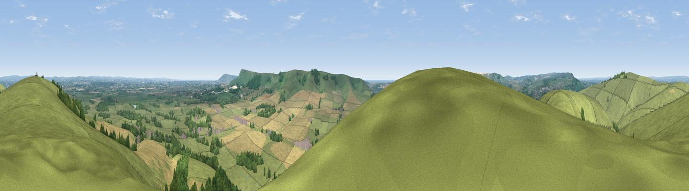

The Caburn
#2274 in England · top 9% of its area beats it · near GlyndeWhere it is
The exact computed spot (TQ 44474 08943). Click the marker for map links.
The view, rendered

A 360° render of this exact spot computed from the terrain model, tree cover and land cover — summer colours, afternoon light, calibrated against photographs of famous viewpoints. Real trees, hedges and buildings will differ in detail.
The panorama
Grey silhouette: terrain skyline in each direction (720 bearings, Earth curvature and refraction included). Dashed green: skyline with trees (+15 m) and buildings (+8 m) as obstacles. Blue strip: how far the ground is visible on each bearing.
Where the view opens
Wedge length = distance to the farthest visible ground on that bearing (vegetation-aware). Rings at 10, 25 and 50 km.
What fills the view
61% grassland · 20% woodland · 18% cropland · 1% built-up
Angular shares of the visible panorama (visual magnitude), not map area. Landscape diversity 0.44 (0–1 Shannon).
Key numbers
More beautiful places nearby
The staircase of upgrades: each row has a higher view potential than everything closer. Driving times are estimates from straight-line distance, calibrated against real road routing — check an actual route before setting out.
| Place | Direction | Drive | Score |
|---|---|---|---|
| Cliffe Hill | NNW · 2 km | ~5 min | 79.3 |
| Viewpoint near Firle | S · 3 km | ~7 min | 81.4 |
| Viewpoint near Firle | SSE · 3 km | ~8 min | 83.8 |
| Viewpoint near Firle | SE · 5 km | ~10 min | 85.4 |
| Firle Beacon | SE · 5 km | ~11 min | 88.9 |
| Viewpoint near Niton | WSW · 100 km | ~125 min | 89.2 |
| Viewpoint near West Bexington | W · 190 km | ~210 min | 89.5 |
| The Knoll | W · 192 km | ~211 min | 91.0 |
50.86195, 0.05150 · source: osm peak · position refined by local search. Computed location — check access rights before visiting.